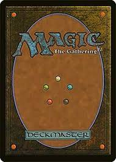

Welding has been a hobby of mine, as well as some past careers. I've been welding for about four years now
And I still love it. Before I started programming and switched careers, I used to work for
A company in which I would weld different kinds of beds on trucks. I would also wire them up
And run hydraulic if necessary. I love problem-solving and thinking that goes into constructing anything
complex.
Magic The Gathering

Magic is a hobby my best friend Jordan and I, do a lot together. We also play dungeons and dragons
And all other kinds of video games. Anything somewhat nerdy, we end up trying together.
Electronics
Electronics is one of my newer hobbies, and is probably where I really started to enjoy coding.
I really like messing around with Arduinos and anything that invovles wiring. I'm not too good
at this hobby yet, although Im still enjoying the learning process.